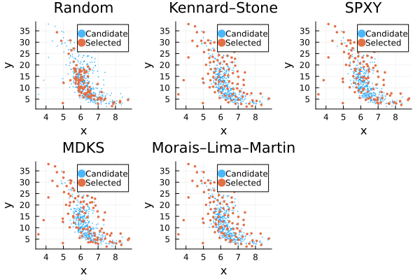

Kennard–Stone Family
The Kennard–Stone algorithm is a deterministic sample-selection method designed to construct a subset that broadly covers the observed feature space [18]. Starting from two distant observations, it repeatedly selects the candidate that is farthest from its nearest already-selected observation.
Several strategies in DataSplits build on this idea by changing the space in which distances are measured or by adding a stochastic perturbation:
| Strategy | Selection space | Main difference |
|---|---|---|
KennardStoneSplit | X | Classical maximin selection |
SPXYSplit | X + y | Combines normalised predictor and response distances |
MDKSSplit | X + y | Uses a covariance-aware distance for the predictors |
MoraisLimaMartinSplit | X | Randomly perturbs a Kennard–Stone selection |
These strategies are primarily useful for training set design. They deliberately select observations to cover a chosen space; the observations left over are therefore determined by the selection procedure and should not automatically be interpreted as a representative prospective test set. See Distance-Based Splitting for the distinction between sample selection and performance evaluation. While this family of algorithms is widely known in specific fields, it is known to overestimate the performance of models [2].
Kennard–Stone
KennardStoneSplit selects observations using only the predictor or feature space X. Given a desired training size, the algorithm:
- Computes the pairwise distances between observations.
- Selects the two observations with the greatest mutual distance.
- For each remaining observation, calculates its distance to the nearest already-selected observation.
- Adds the observation with the largest of these minimum distances.
- Repeats until the requested training size is reached.
The third and fourth steps define the maximin criterion: each new observation is chosen to fill a region that is poorly covered by the current selection.
The resulting training set is therefore spread broadly through the feature space according to the chosen distance metric. Observations not selected for training form the complementary cohort.
The following examples use the Boston housing dataset. The predictors are standardised because the distance-based strategies are sensitive to feature scale. To make differences between the selection methods easier to observe, only 20% of the observations are selected for training.
CADEXSplit is an alias for KennardStoneSplit, and LazyCADEXSplit is an alias for LazyKennardStoneSplit.
Custom distance metrics
Euclidean distance is used by default, but another metric can be supplied when it better represents similarity in the application:
using Distancesres = partition( X, KennardStoneSplit(Cityblock()); train = 0.8, test = 0.2,)The selected subset depends directly on the metric and on the representation of X. Scaling, dimensionality reduction, or other scientifically justified transformations may therefore substantially change the selection.
SPXY — incorporating the response
SPXYSplit extends the Kennard–Stone idea by defining similarity using both the predictor space X and the response y [19].
Pairwise predictor and response distances are first normalised and then combined. Conceptually, the joint distance between observations i and j is
\[d_{XY}(i,j) = \frac{d_X(i,j)}{\max d_X} + \frac{d_y(i,j)}{\max d_y}.\]
Kennard–Stone selection is then applied using this joint distance. The resulting subset is therefore chosen to cover both variation in the predictors and variation in the response.
SPXY is useful when the response is already known for the candidate pool and its range should influence calibration-set selection. Because y is required during selection, SPXY is not appropriate for deciding which samples to label when obtaining the reference response is itself the expensive part of the experiment.
The use of the response also means that the complementary cohort has been selected partly according to its y values. It should therefore not automatically be treated as an independent sample for estimating prospective prediction performance.
Custom metrics can be supplied separately for the predictor and response spaces:
using Distancesres = partition( X, SPXYSplit( metric_X = Cityblock(), metric_y = Euclidean(), ); target = y, train = 0.8, test = 0.2,)MDKS — covariance-aware predictor distances
MDKSSplit changes how separation in the predictor space is measured. Instead of ordinary Euclidean distance, it uses a covariance-aware Mahalanobis distance for X, while response distances are combined with the predictor distances as in SPXY.
Mahalanobis distance accounts for differences in scale and correlation between predictor variables. Two observations that differ mainly along a direction with large natural variation can therefore be regarded as closer than observations with the same Euclidean separation along a low-variance direction. Mahalanobis-based modifications of Kennard–Stone have been proposed for data-subset selection in multivariate modelling [20].
MDKS can be useful when the covariance structure of the predictors contains meaningful information that raw Euclidean distance ignores. It is not automatically preferable to Euclidean distance: the covariance estimate itself must be appropriate for the data.
In high-dimensional, strongly collinear, or small-sample settings, covariance estimation can be unstable. In such cases, dimensionality reduction, regularisation, or an explicitly chosen distance metric may be more appropriate than using an empirical Mahalanobis distance directly.
Like SPXY, MDKS uses the response during selection and therefore requires y to be available for the candidate pool. The MDKS algorithm is equivalent to the SPXY algorithm, but uses the Mahalanobis distance.
Morais–Lima–Martin — stochastic perturbation
Classical Kennard–Stone selection is deterministic: the same data, metric, and requested cohort sizes produce the same selection.
MoraisLimaMartinSplit introduces stochastic variation by first constructing a Kennard–Stone split and then randomly exchanging a fraction of observations between the training and complementary cohorts. This implements the random-mutation idea proposed by Morais et al. [21].
The swap_frac parameter controls the strength of the perturbation. Smaller values retain more of the original Kennard–Stone selection, while larger values introduce more random variation.
This can be useful when alternative partitions derived from the same initial space-filling design are desired. Random mutation also weakens the deterministic coverage property of the original Kennard–Stone selection, so it should not be interpreted as providing the same geometric design with added randomness at no cost.
Initialising the random-number generator with the same seed makes the stochastic selection reproducible.
Distance metrics, scaling, and extreme observations
Distance-based selection is only meaningful when the chosen representation and metric reflect scientifically relevant similarity.
Euclidean distance is sensitive to feature scale, so variables measured on large numerical ranges can dominate the selection. Standardisation or another appropriate transformation should therefore be considered when variables have incomparable units or scales.
Distance-based methods can also preferentially select extreme observations because those observations are far from the current selected set. Whether an extreme sample represents an important boundary of the application domain or an anomalous observation should be assessed using domain knowledge rather than distance alone.
For a broader discussion of feature-space coverage and distance metrics, see Distance-Based Splitting.
Comparing the selections
The strategies can be compared visually by applying them to the same two-dimensional feature space. The following example uses two predictors from the Boston housing dataset and selects 20% of the observations for training. A random split is included as a baseline.
using DataSplitsusing RDatasetsusing Statisticsusing Randomusing Plotsboston = dataset("MASS", "Boston")x1 = Float64.(boston.Rm)x2 = Float64.(boston.LStat)y = Float64.(boston.MedV)X = permutedims(hcat(x1, x2))X = (X .- mean(X; dims = 2)) ./ std(X; dims = 2)random = partition( X, RandomSplit(); train = 0.2, test = 0.8, rng = Xoshiro(42),)ks = partition( X, KennardStoneSplit(); train = 0.2, test = 0.8,)spxy = partition( X, SPXYSplit(); target = y, train = 0.2, test = 0.8,)mdks = partition( X, MDKSSplit(); target = y, train = 0.2, test = 0.8,)mlm = partition( X, MoraisLimaMartinSplit(swap_frac = 0.1); train = 0.2, test = 0.8, rng = Xoshiro(42),)nothingfunction selection_plot(split, title) selected = trainindices(split) p = scatter( x1, x2; label = "Candidate", xlabel = "x", ylabel = "y", title = title, markersize = 1, markerstrokewidth = 0, alpha = 0.70, ) scatter!( p, x1[selected], x2[selected]; label = "Selected", markersize = 2, markerstrokewidth = 0, ) pendplots = [ selection_plot(random, "Random"), selection_plot(ks, "Kennard–Stone"), selection_plot(spxy, "SPXY"), selection_plot(mdks, "MDKS"), selection_plot(mlm, "Morais–Lima–Martin"),]plot( plots...; layout = (2, 3),)
Full and lazy implementations
KennardStoneSplit, SPXYSplit, and MDKSSplit have corresponding lazy implementations.
| Full implementation | Lazy implementation |
|---|---|
KennardStoneSplit | LazyKennardStoneSplit |
SPXYSplit | LazySPXYSplit |
MDKSSplit | LazyMDKSSplit |
The full implementations precompute pairwise distances and therefore require memory that grows quadratically with the number of observations. The lazy implementations avoid storing the complete distance matrix and recompute distances as needed, reducing peak memory requirements at the cost of additional computation.
Prefer the full implementation when the pairwise distance matrices comfortably fit in memory and the lazy implementation when memory is the limiting resource. Exact runtime differences depend on the dataset, metric, hardware, and Julia version and should be benchmarked for the application of interest.
MoraisLimaMartinSplit does not currently have a separate lazy variant.